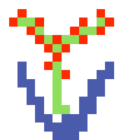

| Entities | Items | Recipes | Magics |
|---|
Winteraceae Seed
|
|
Winteraceae SeedUnderia |
WINTERACEAE SEED is a trophy with id #867. Its rarity value is 1(Common).It can be directly crafted.
As Results From:
Winteraceae Seed 寒冬青种*2 |
 Cauldron 坩锅*1  Winteraceae 寒冬青*1 |